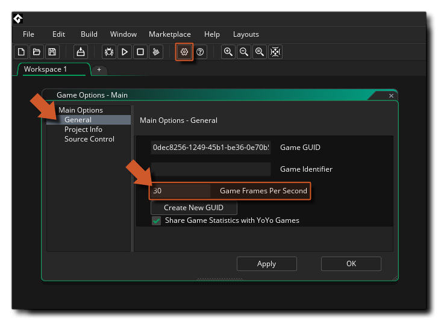

You've made it to Chapter 3 of our "My First Game" series of tutorials, and you're doing well! You should now have a player ship that can move and shoot, and bullets that are timed to come out at regular intervals. So, what next? Well, most games have some form of goal to achieve and more often than not this involves shooting something, so in this tutorial our goal is to add in some enemies for the player to shoot.
Before getting to the part where we add the enemies, however, we are going to take a moment to speed the game up and make it feel more responsive. We could do this by changing the amount of pixels that player moves when the arrow keys are pressed, along with changing the bullet speed and the timer instance variable we use... but there is an easier way!
As mentioned briefly in a previous tutorial, all games run at a speed which is defined by the number of times the game loop runs in a second. Each loop is called a game frame and so we call the speed at which a game runs the game Frames Per Second (FPS). By default this is set to 30 by GameMaker Studio 2 for any new project, which is fine for puzzle games, or games that don't require fast response times or even for mobile games, but for arcade style games like ours a preferred value would be 60.
The game Frames per Second setting can be changed in the Game Options which you can open from the button at the top of the IDE, or by going to the Resource Tree Main options item: 
As you can see from the image above, here you can change a few things that will affect how your project will run, including the game FPS value. So, set this to 60 now, then click on Apply and close the options then test the game again. You'll see that everything is much faster, and smoother when playing.